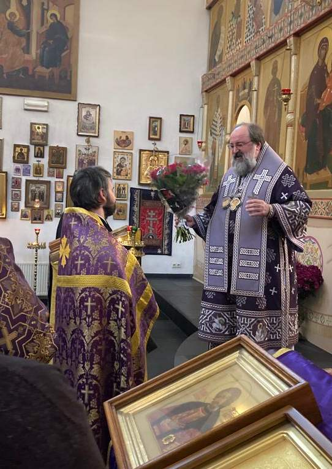

Воскресенье, 25-я неделя по Пятидесятнице. Ап. Андрея Первозванного. 12.12.2021
Праздничная Воскресная Литургия, Архиерейская служба . Поздравления отца настоятеля Дмитрия Винницкого с Днём Рождения.
Многая лета, дорогому отцу настоятелю и всей его семье и детям!
01.11.2021
Op
13 november a.s. zal in onze kerk in Rotterdam een kleine
herdenkingsdienst plaatsvinden ter gelegenheid van het 200ste
geboortejaar van Dostojevski.Deze "Panichida" begint om 16:00 uur en duurt ongeveer een half uur.
27.10.2021
Дорогие, братья и сестры! Обратите,
пожалуйста, внимание на нашем сайте в разделе Приходской листок
появилась статья об истории написания иконы св. мученицы Киранны,
которую недавно передала в дар храму наша прихожанка Каллиопия
Папасотириу.
10.10.2021
Сегодня,
после богослужения, архиепископ Елисей встретился с группой прихожан
собора, представителей Координационного Совета организаций российских
соотечественников в Нидерландах. В результате встречи был образован
оргкомитет по созданию филиала в Нидерландах международной общественной
организации «Всемирный русский народный собор» (ВРНС). Было решено
доложить об этой инициативе Священноначалию и руководству ВНРС, а также
приступить к подготовке юбилейного концерта духовной музыки в стенах
Александро-Невского кафедрального собора, посвященного 800-летию со дня
рождения св. князя Александра Невского. |

")

")